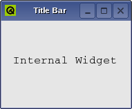

QMdiSubWindow Class
The QMdiSubWindow class provides a subwindow class for QMdiArea. More...
| Header: | #include <QMdiSubWindow> |
| CMake: | find_package(Qt6 REQUIRED COMPONENTS Widgets) target_link_libraries(mytarget PRIVATE Qt6::Widgets) |
| qmake: | QT += widgets |
| Inherits: | QWidget |
Public Types
| enum | SubWindowOption { RubberBandResize, RubberBandMove } |
| flags | SubWindowOptions |
Properties
- keyboardPageStep : int
- keyboardSingleStep : int
Public Functions
| QMdiSubWindow(QWidget *parent = nullptr, Qt::WindowFlags flags = Qt::WindowFlags()) | |
| virtual | ~QMdiSubWindow() |
| bool | isShaded() const |
| int | keyboardPageStep() const |
| int | keyboardSingleStep() const |
| QMdiArea * | mdiArea() const |
| void | setKeyboardPageStep(int step) |
| void | setKeyboardSingleStep(int step) |
| void | setOption(QMdiSubWindow::SubWindowOption option, bool on = true) |
| void | setSystemMenu(QMenu *systemMenu) |
| void | setWidget(QWidget *widget) |
| QMenu * | systemMenu() const |
| bool | testOption(QMdiSubWindow::SubWindowOption option) const |
| QWidget * | widget() const |
Reimplemented Public Functions
| virtual QSize | minimumSizeHint() const override |
| virtual QSize | sizeHint() const override |
Public Slots
| void | showShaded() |
| void | showSystemMenu() |
Signals
| void | aboutToActivate() |
| void | windowStateChanged(Qt::WindowStates oldState, Qt::WindowStates newState) |
Reimplemented Protected Functions
| virtual void | changeEvent(QEvent *changeEvent) override |
| virtual void | childEvent(QChildEvent *childEvent) override |
| virtual void | closeEvent(QCloseEvent *closeEvent) override |
| virtual void | contextMenuEvent(QContextMenuEvent *contextMenuEvent) override |
| virtual bool | event(QEvent *event) override |
| virtual bool | eventFilter(QObject *object, QEvent *event) override |
| virtual void | focusInEvent(QFocusEvent *focusInEvent) override |
| virtual void | focusOutEvent(QFocusEvent *focusOutEvent) override |
| virtual void | hideEvent(QHideEvent *hideEvent) override |
| virtual void | keyPressEvent(QKeyEvent *keyEvent) override |
| virtual void | leaveEvent(QEvent *leaveEvent) override |
| virtual void | mouseDoubleClickEvent(QMouseEvent *mouseEvent) override |
| virtual void | mouseMoveEvent(QMouseEvent *mouseEvent) override |
| virtual void | mousePressEvent(QMouseEvent *mouseEvent) override |
| virtual void | mouseReleaseEvent(QMouseEvent *mouseEvent) override |
| virtual void | moveEvent(QMoveEvent *moveEvent) override |
| virtual void | paintEvent(QPaintEvent *paintEvent) override |
| virtual void | resizeEvent(QResizeEvent *resizeEvent) override |
| virtual void | showEvent(QShowEvent *showEvent) override |
| virtual void | timerEvent(QTimerEvent *timerEvent) override |
Detailed Description
QMdiSubWindow represents a top-level window in a QMdiArea, and consists of a title bar with window decorations, an internal widget, and (depending on the current style) a window frame and a size grip. QMdiSubWindow has its own layout, which consists of the title bar and a center area for the internal widget.

The most common way to construct a QMdiSubWindow is to call QMdiArea::addSubWindow() with the internal widget as the argument. You can also create a subwindow yourself, and set an internal widget by calling setWidget().
You use the same API when programming with subwindows as with regular top-level windows (e.g., you can call functions such as show(), hide(), showMaximized(), and setWindowTitle()).
Subwindow Handling
QMdiSubWindow also supports behavior specific to subwindows in an MDI area.
By default, each QMdiSubWindow is visible inside the MDI area viewport when moved around, but it is also possible to specify transparent window movement and resizing behavior, where only the outline of a subwindow is updated during these operations. The setOption() function is used to enable this behavior.
The isShaded() function detects whether the subwindow is currently shaded (i.e., the window is collapsed so that only the title bar is visible). To enter shaded mode, call showShaded(). QMdiSubWindow emits the windowStateChanged() signal whenever the window state has changed (e.g., when the window becomes minimized, or is restored). It also emits aboutToActivate() before it is activated.
In keyboard-interactive mode, the windows are moved and resized with the keyboard. You can enter this mode through the system menu of the window. The keyboardSingleStep and keyboardPageStep properties control the distance the widget is moved or resized for each keypress event. When shift is pressed down page step is used; otherwise single step is used.
You can also change the active window with the keyboard. By pressing the control and tab keys at the same time, the next (using the current WindowOrder) subwindow will be activated. By pressing control, shift, and tab, you will activate the previous window. This is equivalent to calling activateNextSubWindow() and activatePreviousSubWindow(). Note that these shortcuts overrides global shortcuts, but not the QMdiAreas shortcuts.
See also QMdiArea.
Member Type Documentation
enum QMdiSubWindow::SubWindowOption
flags QMdiSubWindow::SubWindowOptions
This enum describes options that customize the behavior of QMdiSubWindow.
| Constant | Value | Description |
|---|---|---|
QMdiSubWindow::RubberBandResize | 0x4 | If you enable this option, a rubber band control is used to represent the subwindow's outline, and the user resizes this instead of the subwindow itself. As a result, the subwindow maintains its original position and size until the resize operation has been completed, at which time it will receive a single QResizeEvent. By default, this option is disabled. |
QMdiSubWindow::RubberBandMove | 0x8 | If you enable this option, a rubber band control is used to represent the subwindow's outline, and the user moves this instead of the subwindow itself. As a result, the subwindow remains in its original position until the move operation has completed, at which time a QMoveEvent is sent to the window. By default, this option is disabled. |
The SubWindowOptions type is a typedef for QFlags<SubWindowOption>. It stores an OR combination of SubWindowOption values.
Property Documentation
keyboardPageStep : int
sets how far a widget should move or resize when using the keyboard page keys.
When in keyboard-interactive mode, you can use the arrow and page keys to either move or resize the window. This property controls the page keys. The common way to enter keyboard interactive mode is to enter the subwindow menu, and select either "resize" or "move".
The default keyboard page step value is 20 pixels.
Access functions:
| int | keyboardPageStep() const |
| void | setKeyboardPageStep(int step) |
See also keyboardSingleStep.
keyboardSingleStep : int
sets how far a widget should move or resize when using the keyboard arrow keys.
When in keyboard-interactive mode, you can use the arrow and page keys to either move or resize the window. This property controls the arrow keys. The common way to enter keyboard interactive mode is to enter the subwindow menu, and select either "resize" or "move".
The default keyboard single step value is 5 pixels.
Access functions:
| int | keyboardSingleStep() const |
| void | setKeyboardSingleStep(int step) |
See also keyboardPageStep.
Member Function Documentation
QMdiSubWindow::QMdiSubWindow(QWidget *parent = nullptr, Qt::WindowFlags flags = Qt::WindowFlags())
Constructs a new QMdiSubWindow widget. The parent and flags arguments are passed to QWidget's constructor.
Instead of using addSubWindow(), it is also simply possible to use setParent() when you add the subwindow to a QMdiArea.
Note that only QMdiSubWindows can be set as children of QMdiArea; you cannot, for instance, write:
//bad code QMdiArea mdiArea; QTextEdit editor(&mdiArea); // invalid child widget
See also QMdiArea::addSubWindow().
[virtual noexcept] QMdiSubWindow::~QMdiSubWindow()
Destroys the subwindow.
See also QMdiArea::removeSubWindow().
[signal] void QMdiSubWindow::aboutToActivate()
QMdiSubWindow emits this signal immediately before it is activated. After the subwindow has been activated, the QMdiArea that manages the subwindow will also emit the subWindowActivated() signal.
See also QMdiArea::subWindowActivated().
[override virtual protected] void QMdiSubWindow::changeEvent(QEvent *changeEvent)
Reimplements: QWidget::changeEvent(QEvent *event).
[override virtual protected] void QMdiSubWindow::childEvent(QChildEvent *childEvent)
Reimplements: QObject::childEvent(QChildEvent *event).
[override virtual protected] void QMdiSubWindow::closeEvent(QCloseEvent *closeEvent)
Reimplements: QWidget::closeEvent(QCloseEvent *event).
[override virtual protected] void QMdiSubWindow::contextMenuEvent(QContextMenuEvent *contextMenuEvent)
Reimplements: QWidget::contextMenuEvent(QContextMenuEvent *event).
[override virtual protected] bool QMdiSubWindow::event(QEvent *event)
Reimplements: QWidget::event(QEvent *event).
[override virtual protected] bool QMdiSubWindow::eventFilter(QObject *object, QEvent *event)
Reimplements: QObject::eventFilter(QObject *watched, QEvent *event).
[override virtual protected] void QMdiSubWindow::focusInEvent(QFocusEvent *focusInEvent)
Reimplements: QWidget::focusInEvent(QFocusEvent *event).
[override virtual protected] void QMdiSubWindow::focusOutEvent(QFocusEvent *focusOutEvent)
Reimplements: QWidget::focusOutEvent(QFocusEvent *event).
[override virtual protected] void QMdiSubWindow::hideEvent(QHideEvent *hideEvent)
Reimplements: QWidget::hideEvent(QHideEvent *event).
bool QMdiSubWindow::isShaded() const
Returns true if this window is shaded; otherwise returns false.
A window is shaded if it is collapsed so that only the title bar is visible.
[override virtual protected] void QMdiSubWindow::keyPressEvent(QKeyEvent *keyEvent)
Reimplements: QWidget::keyPressEvent(QKeyEvent *event).
[override virtual protected] void QMdiSubWindow::leaveEvent(QEvent *leaveEvent)
Reimplements: QWidget::leaveEvent(QEvent *event).
QMdiArea *QMdiSubWindow::mdiArea() const
Returns the area containing this sub-window, or nullptr if there is none.
See also QMdiArea::addSubWindow().
[override virtual] QSize QMdiSubWindow::minimumSizeHint() const
Reimplements an access function for property: QWidget::minimumSizeHint.
[override virtual protected] void QMdiSubWindow::mouseDoubleClickEvent(QMouseEvent *mouseEvent)
Reimplements: QWidget::mouseDoubleClickEvent(QMouseEvent *event).
[override virtual protected] void QMdiSubWindow::mouseMoveEvent(QMouseEvent *mouseEvent)
Reimplements: QWidget::mouseMoveEvent(QMouseEvent *event).
[override virtual protected] void QMdiSubWindow::mousePressEvent(QMouseEvent *mouseEvent)
Reimplements: QWidget::mousePressEvent(QMouseEvent *event).
[override virtual protected] void QMdiSubWindow::mouseReleaseEvent(QMouseEvent *mouseEvent)
Reimplements: QWidget::mouseReleaseEvent(QMouseEvent *event).
[override virtual protected] void QMdiSubWindow::moveEvent(QMoveEvent *moveEvent)
Reimplements: QWidget::moveEvent(QMoveEvent *event).
[override virtual protected] void QMdiSubWindow::paintEvent(QPaintEvent *paintEvent)
Reimplements: QWidget::paintEvent(QPaintEvent *event).
[override virtual protected] void QMdiSubWindow::resizeEvent(QResizeEvent *resizeEvent)
Reimplements: QWidget::resizeEvent(QResizeEvent *event).
Warning: When maximizing or restoring a subwindow, the resulting call to this function may have an invalid QResizeEvent::oldSize().
void QMdiSubWindow::setOption(QMdiSubWindow::SubWindowOption option, bool on = true)
If on is true, option is enabled on the subwindow; otherwise it is disabled. See SubWindowOption for the effect of each option.
See also SubWindowOption and testOption().
void QMdiSubWindow::setSystemMenu(QMenu *systemMenu)
Sets systemMenu as the current system menu for this subwindow.
By default, each QMdiSubWindow has a standard system menu.
QActions for the system menu created by QMdiSubWindow will automatically be updated depending on the current window state; e.g., the minimize action will be disabled after the window is minimized.
QActions added by the user are not updated by QMdiSubWindow.
QMdiSubWindow takes ownership of systemMenu; you do not have to delete it. Any existing menus will be deleted.
See also systemMenu() and showSystemMenu().
void QMdiSubWindow::setWidget(QWidget *widget)
Sets widget as the internal widget of this subwindow. The internal widget is displayed in the center of the subwindow beneath the title bar.
QMdiSubWindow takes temporary ownership of widget; you do not have to delete it. Any existing internal widget will be removed and reparented to the root window.
See also widget().
[override virtual protected] void QMdiSubWindow::showEvent(QShowEvent *showEvent)
Reimplements: QWidget::showEvent(QShowEvent *event).
[slot] void QMdiSubWindow::showShaded()
Calling this function makes the subwindow enter the shaded mode. When the subwindow is shaded, only the title bar is visible.
Although shading is not supported by all styles, this function will still show the subwindow as shaded, regardless of whether support for shading is available. However, when used with styles without shading support, the user will be unable to return from shaded mode through the user interface (e.g., through a shade button in the title bar).
See also isShaded().
[slot] void QMdiSubWindow::showSystemMenu()
Shows the system menu below the system menu icon in the title bar.
See also setSystemMenu() and systemMenu().
[override virtual] QSize QMdiSubWindow::sizeHint() const
Reimplements an access function for property: QWidget::sizeHint.
QMenu *QMdiSubWindow::systemMenu() const
Returns a pointer to the current system menu, or zero if no system menu is set. QMdiSubWindow provides a default system menu, but you can also set the menu with setSystemMenu().
See also setSystemMenu() and showSystemMenu().
bool QMdiSubWindow::testOption(QMdiSubWindow::SubWindowOption option) const
Returns true if option is enabled; otherwise returns false.
See also SubWindowOption and setOption().
[override virtual protected] void QMdiSubWindow::timerEvent(QTimerEvent *timerEvent)
Reimplements: QObject::timerEvent(QTimerEvent *event).
QWidget *QMdiSubWindow::widget() const
Returns the current internal widget.
See also setWidget().
[signal] void QMdiSubWindow::windowStateChanged(Qt::WindowStates oldState, Qt::WindowStates newState)
QMdiSubWindow emits this signal after the window state changes. oldState is the window state before it changed, and newState is the new, current state.